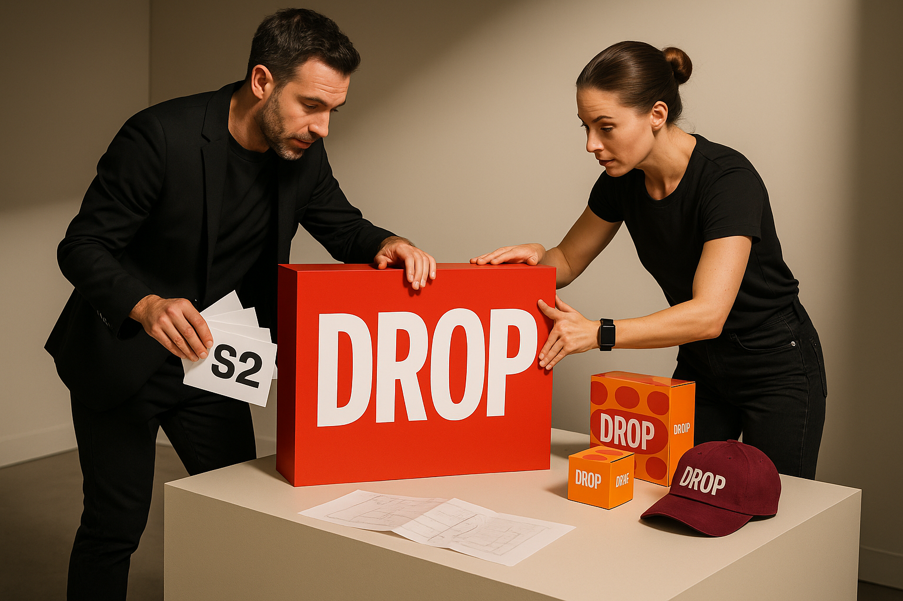

Image generated with OpenAI gpt-image-1
Executive Summary
Run adjacent early-holiday and parade-week tests in a priority market to see whether shifting effort earlier captures demand without eroding margin [^4][^1]. Design the parade-week activation to detect an 8–12% foot-traffic uplift versus baseline stores as a test target, informed by parade-week concentration of attention [^1][^5]. Size the 2–4 week early-holiday program to detect a 10–15% rise in early-deal share versus last year, and have merchandising, analytics, store ops and marketing finalize offers, control stores, sample sizing and tracking definitions within 30 days [^4][^3].
- Parade-week activations should be treated as a discrete test window; target detection of an 8–12% incremental footfall lift versus baseline [^1][^5].
- Shift discounting toward earlier, targeted offers to protect margin; set tests to detect a 10–15% increase in early-deal share versus last year [^4][^3].
- Run adjacent 2–4 week experiments in one priority market with control stores and clear KPI definitions; analytics must lock sample size and instrumentation within 30 days [^4].
Top Operator Moves
- Stand up a 2–4 week early-holiday program in one top market and assign a control store; instrument conversion, AOV and return rates.
- Plan a parade-week in-store activation (timed drop or limited offer) and set measurement to detect an 8–12% incremental foot-traffic lift versus baseline.
- Rebuild the discount ladder and A/B test loyalty-targeted offers against public markdowns; have merchandising and analytics finalize offers, sample sizing and tracking in 30 days.
Signal Map
Behavioral
Holiday Shopping Window Starts Earlier
Retailers and consumers are shifting the holiday buying calendar forward, with industry forecasts and commentary noting an earlier start to seasonal activity driven by economic caution. Deloitte’s 2025 holiday outlook framed in Forbes shows the market preparing for a longer, earlier promotional period rather than concentrating demand in late-November and December.
Operator move: Launch a 2–4 week early-holiday program (digital + in-store) in a top market and measure conversion, AOV, and return rates versus a control store within 8 weeks.
Strength 0.90 · US fit 1.00
· Sources: 4
Cultural
Flagship Stores as Event Endpoints
Major cultural events remain anchor moments for flagship storytelling: the Macy’s Thanksgiving Day Parade culminates at Macy’s Herald Square, and related primetime programming extends the event's attention window. Brands can leverage parade timing and adjacent programming as a concentrated moment to drive flagship activations and physical footfall over the Thanksgiving weekend.
Operator move: Coordinate a parade-weekend in-store activation or limited-time offer tied to the event (e.g., timed drop, live-stream hub, or exclusive product) and track incremental footfall and same-day conversion over the holiday weekend.
Strength 0.82 · US fit 1.00
· Sources: 1, 5
Market
Pop-Up Variability Becomes Tactical Flagship Extension
Holiday pop-ups are being deployed with different strategic aims—some act as high-volume sales engines while others function as narrative-rich brand showcases—illustrating the format’s utility as a temporary flagship. Recent NYC pop-ups from large retailers demonstrate how short-run physical presences can be tuned either for commerce or storytelling during the holiday window.
Operator move: Deploy a 2–3 week branded pop-up in one priority metro with a clearly defined objective (commerce vs. storytelling), capture sales and engagement metrics, and compare to a standard store KPI baseline within 8 weeks.
Strength 0.80 · US fit 0.90
· Sources: 2
Technology
AI-Powered Flagships Reduce Markdown Risk
Flagship operations are being augmented with AI tools to improve inventory accuracy, replenishment cadence, and the in-store customer experience—changes that can materially alter markdown timing and depth. A recent flagship rollout highlights how AI-driven operations can support both experience storytelling and tighter inventory control during peak holiday periods.
Operator move: Pilot AI-driven demand/replenishment rules and in-store personalization in a single flagship to measure reduced stockouts and markdown exposure across the holiday period within 8 weeks.
Strength 0.79 · US fit 0.95
· Sources: 7
Market
Slower Growth Changes Discounting Math — Earlier, Targeted, Shallower
Macro guidance for 2025 points to slower U.S. holiday retail growth, prompting retailers to shift from deep, late-season clearance toward earlier, more targeted promotions to protect margins. Early promotional activity and visible pre–Black Friday discounts indicate firms are experimenting with timing and audience targeting to avoid steep end-of-season markdowns.
Operator move: Rebuild the discount ladder to favor earlier targeted offers (loyalty/customer-segmented) and cap broad public markdown depth; A/B test headline depth vs. targeted promo across two markets over the next 6–8 weeks.
Strength 0.88 · US fit 1.00
· Sources: 4, 3
Quant Anchors
US holiday retail growth (Deloitte forecast)
2.9–3.4 % YoY
(observed)
Signals: S1, S5
Sources: 4
High-value early window (operator guidance)
2–4 weeks before Black Friday
(recommended)
Signals: S1, S5
Sources: 4
Pop-up / activation typical length
2–3 weeks
(observed/recommended)
Signals: S3
Sources: 2
Measurement Plan
Foot-traffic uplift vs baseline (store-level)
Owner: Brick-&-mortar ops + analytics · Timeframe: 2–4 week early window (and Black Friday weekend), compare 8-week pre/post windows
Target: Measure % uplift = (traffic_event_store - traffic_control_store) / traffic_control_store; target detectability ≥ +10% uplift
Share of early deals (14 days before Black Friday)
Owner: Merchandising + eCom analytics · Timeframe: 14 days prior to Black Friday (apply rolling daily capture)
Target: Share_early = (#SKUs with price markdown or promo active in days -14 to -1) / (total featured holiday SKUs); track per-channel (online vs in-store)
Event CPA and conversion efficiency
Owner: Performance marketing · Timeframe: Thanksgiving weekend and 2–4 week early program
Target: CPA_event ≤ 0.80 × CPA_baseline (baseline = 90-day pre-holiday average); also track AOV and return rate delta
Discounting math — margin and redemption impact
Owner: Finance + Pricing · Timeframe: Full holiday season with 8-week reconciliation
Target: Measure margin_delta = gross_margin_event - gross_margin_baseline; redemption_rate = #redeemed_targeted_promos / #issued_targeted_promos; target: cap public markdown depth to keep margin_delta ≥ -X% (set during planning)
Buyer activity share in the early window is tracked separately from SKU promotion share so operators can grow participation without flooding SKUs with discounts.
Deep Analysis
High-value timing windows
Holiday demand is shifting earlier, so operators should treat pre-parade/early-November activity as a discrete high-value window rather than folding it into a single late-November spike [^4]. Events like the Macy’s Thanksgiving Day Parade concentrate consumer attention and create a parade-weekend uplift that can be converted through timed in-store activations and limited drops [^1][^5]. The signal map ties an early-holiday behavioral test (S1) to a parade-centered cultural play (S2), so run adjacent experiments to measure how effort and spend reallocate across these two windows [^4][^1][^5].
Run a 2–4 week early-holiday program in a top market and a parade-weekend activation; instrument conversion, AOV, return rate, incremental footfall, and same-day conversion vs. a control store over 6–8 weeks.
Discounting math and margin risk
With Deloitte forecasting only modest holiday growth (roughly +2.9–3.4% to ~$1.61–$1.62T), broad deep discounting risks eroding margin without reliably delivering incremental volume [^4]. The signal map recommends rebuilding the discount ladder toward earlier, targeted offers for loyalty segments and capping public markdown depth to protect margin while still driving traffic [^4][^3]. Operators must A/B test headline-depth promotional tactics against targeted promos to measure per-promo elasticity on conversion, AOV, and margin so small percentage changes can be traced to profit outcomes [^4][^3].
Rebuild the discount ladder and run an A/B test of headline-depth vs. targeted loyalty promos across two markets; instrument promo-attributed conversion, incremental revenue, margin impact, and short-term customer LTV over 6–8 weeks.
Pop-up and experiential ROI
Branded pop-ups and experiential flagships can deliver both commerce and storytelling but results are highly objective-dependent and market-specific [^2]. The map’s S3 playbook prescribes a 2–3 week pop-up with a single measurable objective (commerce vs. storytelling) and explicit KPIs so outcomes can be compared directly to a standard store baseline [^2]. To justify scale, operators should capture per-visit economics and marketing-sourced lift rather than anecdotal engagement metrics [^2].
Deploy a 2–3 week branded pop-up in a priority metro with a clearly defined objective; instrument sales per ft², conversion lift, cost-per-visit, dwell time, and incremental footfall vs. baseline store KPIs over 6–8 weeks.
Inventory resilience through AI-driven personalization
AI-driven demand forecasting, replenishment rules, and in-store personalization can materially reduce stockouts and markdown exposure during short holiday spikes when executed in a controlled flagship pilot [^7]. The signal map recommends piloting these systems in one store to measure reduced stockouts, faster replenishment cycles, and any lift to AOV and sell-through over the holiday period [^7]. Operators should quantify both operational KPIs and the revenue impact to decide whether the technology scales profitably beyond the flagship [^7].
Pilot AI replenishment and in-store personalization in a single flagship; instrument stockout rate, days-of-supply, markdown frequency, replenishment lead times, and AOV/sell-through over an 8-week holiday window.
Historical & Contemporary Pattern Matches
Holiday window creep — moving the high-value buying window earlier
Retailers have steadily shifted major holiday promotions earlier to capture cautious shoppers and spread demand across a longer season, a trend called out in recent holiday forecasts.
Operator leap: Launch a 2–4 week early-holiday program (digital + in‑store) in a priority market and measure conversion, AOV, and return rates versus a control store within 8 weeks to quantify lift and margin impact.
Event‑tied in-store activations anchored to cultural moments
Longstanding public events like the Macy’s Thanksgiving Day Parade have historically concentrated consumer attention and footfall around a single calendar window.
Operator leap: Coordinate a parade-weekend in-store activation or limited-time offer (timed product drop, live-stream hub, exclusive SKUs) and track incremental footfall and same-day conversion over the holiday weekend.
Branded pop-ups as rapid market experiments
Brands have long used short-term pop-ups to create urgency and test formats, and recent holiday examples from Amazon and Primark demonstrate two distinct execution models (commerce vs storytelling).
Operator leap: Deploy a 2–3 week branded pop-up in one priority metro with a clearly defined objective (commerce vs. storytelling), capture sales and engagement metrics, and compare to a standard store KPI baseline within 8 weeks.
Flagship-as-lab: AI to tighten inventory and personalization
Flagship stores have served as operational labs, and contemporary operators like Fabletics are rolling AI into demand/replenishment and in‑store personalization to improve availability and experience.
Operator leap: Pilot AI-driven demand/replenishment rules and in-store personalization in a single flagship to measure reduced stockouts and markdown exposure across the holiday period within 8 weeks.
Rebuilding the discount ladder — favor targeted early promos over blanket markdowns
Faced with slower retail growth and margin pressure, retailers historically leaned on broad heavy markdowns, but forecasts and current Black Friday behaviors point to a shift toward earlier, targeted incentives.
Operator leap: Rebuild the discount ladder to favor earlier targeted offers (loyalty/customer-segmented) and cap broad public markdown depth; A/B test headline depth vs. targeted promo across two markets over 6–8 weeks.
Case Study Vignettes
Image generated with OpenAI gpt-image-1

Image generated with OpenAI gpt-image-1
Brand & Operator Outcomes
Frontload holiday demand with targeted early offers
Launch a 2–4 week early-holiday program in a top market that pairs modest, public headline discounts with deeper, targeted loyalty offers; run it digital + in-store and measure conversion, AOV and return rates against a control store. This captures cautious, earlier spend windows and narrows the depth and duration of broad markdowns to protect margin while driving loyalty engagement [^4][^3].
Impact: Incremental margin; loyalty penetration; average order value (AOV)
Treat parade weekend as a concentrated physical shopping window
Coordinate a parade-weekend activation — timed drops, a live-stream hub, or an exclusive product moment — in-market to convert event-driven attention into same-day visits and purchases. Track incremental footfall, dwell time and same-day conversion; use the parade timing as a clear high-value window to drive urgency and throughput [^1][^5].
Impact: Throughput (footfall & conversion); same-day sales uplift
Deploy a 2–3 week branded pop-up to trade storytelling for sales
Run a focused pop-up in one priority metro with a single objective (commerce vs. storytelling), instrumented for sales, new-customer acquisition, and engagement metrics. Compare results to a standard-store KPI baseline to determine whether to roll pop-up assortments, merchandising, or experiential elements into flagship holiday plans [^2].
Impact: Incremental sales; customer acquisition; marketing ROI
Pilot AI-driven replenishment and in-store personalization to protect margin
Pilot AI demand/replenishment rules and in-store personalization in one flagship to reduce stockouts and markdown exposure across the holiday peak. Measure reduced out-of-stocks, lower markdown depth and improved sell-through within 8 weeks to quantify incremental margin and inventory-turn gains [^7].
Impact: Reduced stockouts & markdowns; incremental margin; inventory turnover
Activation Kit — Brand Collab Lab Handoff
Early-holiday 2–4 week market pilot
Launch a 2–4 week early-holiday program (digital + in-store) in a top market and measure conversion, AOV, and return rates versus a control store within 8 weeks. — cites [4]
Pillar: Operator Workflow · Owner: Regional Operations Lead · Partner: Brand marketing partner · Timing: immediate
Thresholds: Mini-burst success if event CPA ≤ 0.8x baseline and redemption ≥ 15%; staged discount success if margin per order ≥ baseline minus 100 bps and 90-day repeat ≥ baseline.
Persona: Store Operations Director · Collab: brand↔operator · Zero new SKUs: Yes · Ops drag: medium
Target map:
- Store Director (Retail Operations): Instrument in-store conversion and returns in a top market during the earlier holiday window.
- CRM Manager (Marketing): Activate targeted digital-to-store promos to drive early traffic and measure redemption.
- Merchandising Analyst (E-commerce/Merchandising): Capture AOV and returns versus control to validate assortment and pricing assumptions.
Outreach cadence:
- Day Day 0 — Pilot kickoff and instrumentation: Confirm control store, enable tracking pixels, push targeted creative, and align store staffing and fulfillment timing. (CTA: Send 1-page runbook to merchandising, store ops, and finance)
- Day Day 7 — Mid-program health check: Review early CPA, redemption, on-floor conversion, and any operational friction for rapid adjustments. (CTA: Book 30-minute readout with finance and ops to review guardrails)
- Day Day 28 — Preliminary results and go/no-go: Assess conversion, AOV, and return rate versus control to determine scale or iterate. (CTA: Deliver scale/kill decision memo to executive sponsor)
Discount ladder rebuild and A/B headline test
Rebuild the discount ladder to favor earlier targeted offers (loyalty/customer-segmented) and cap broad public markdown depth; A/B test headline depth vs. targeted promo across two markets over the next 6–8 weeks. — cites [4, 3]
Pillar: Operator Workflow · Owner: Head of Merchandising · Partner: Pricing & Loyalty team · Timing: 6-week
Thresholds: Staged discount success if margin per order ≥ baseline minus 100 bps and 90-day repeat ≥ baseline; use mini-burst CPA and redemption thresholds as a safety check for any promotional events (CPA ≤ 0.8x baseline and redemption ≥ 15%).
Persona: Merchandise Strategy Lead · Collab: operator↔brand · Zero new SKUs: Yes · Ops drag: high
Target map:
- Pricing Lead (Merchandising): Protect margin while testing earlier targeted discounting in priority markets.
- Loyalty Program Manager (Loyalty/CRM): Activate segmented offers to high-value customers ahead of broad public discounts.
- Revenue Analyst (Finance): Validate margin per order impacts and 90-day repeat assumptions for promotional strategies.
Outreach cadence:
- Day Day 0 — A/B test launch and control setup: Deploy targeted vs. headline promos in two matched markets and publish tracking to revenue and repeat metrics. (CTA: Send 1-page runbook to merchandising, store ops, and finance)
- Day Day 14 — Interim performance check: Review margin per order, redemption by cohort, and any inventory or customer-service impacts to decide on tactical adjustments. (CTA: Book 30-minute readout with finance and ops to review guardrails)
- Day Day 42 — Final analysis and recommendation: Compare A/B outcomes on margin, 90-day repeat projections, and customer LTV to set broader holiday discount policy. (CTA: Deliver scale/kill decision memo to executive sponsor)
2–3 week branded pop-up pilot
Deploy a 2–3 week branded pop-up in one priority metro with a clearly defined objective (commerce vs. storytelling), capture sales and engagement metrics, and compare to a standard store KPI baseline within 8 weeks. — cites [2]
Pillar: Studio Collaboration · Owner: Experiential Program Manager · Partner: Creative Studio · Timing: pilot
Thresholds: Mini-burst success if event CPA ≤ 0.8x baseline and redemption ≥ 15%; staged discount guardrail applies to any promotional pricing used (margin per order ≥ baseline minus 100 bps and 90-day repeat ≥ baseline).
Persona: Experiential Program Manager · Collab: studio↔operator · Zero new SKUs: No · Ops drag: high
Target map:
- Pop-up Lead (Experiential/Events): Test incremental footfall and conversion in a priority metro with controlled spend.
- Producer (Creative Studio): Deliver storytelling and measurement design to compare engagement vs. standard stores.
- Brand Partnerships Manager (Partnerships): Evaluate co-funded activations and partnership ROI ahead of holiday scale.
Outreach cadence:
- Day Day -14 — Build and logistics sign-off: Confirm layout, staffing, POS flows, product mix (commerce vs storytelling), and measurement plan. (CTA: Send 1-page runbook to merchandising, store ops, and finance)
- Day Day 7 — Operational pulse: Measure footfall, same-day conversion, and in-venue engagement to optimize staffing and messaging. (CTA: Book 30-minute readout with finance and ops to review guardrails)
- Day Day 21 — Closeout and comparative analysis: Compare pop-up KPIs to baseline store performance and decide on repeat or scale. (CTA: Deliver scale/kill decision memo to executive sponsor)
Flagship AI demand and in-store personalization pilot
Pilot AI-driven demand/replenishment rules and in-store personalization in a single flagship to measure reduced stockouts and markdown exposure across the holiday period within 8 weeks. — cites [7]
Pillar: Studio Collaboration · Owner: Head of Supply Chain Analytics · Partner: Technology Studio / Data Science Lab · Timing: pilot
Thresholds: Primary target: measurable reduction in stockouts and markdown exposure across the pilot window; use staged discount guardrail to ensure margin per order ≥ baseline minus 100 bps and 90-day repeat ≥ baseline; use mini-burst CPA threshold as a promotional safety check when personalization triggers offers (CPA ≤ 0.8x baseline and redemption ≥ 15%).
Persona: Head of Inventory & Replenishment · Collab: studio↔operator · Zero new SKUs: Yes · Ops drag: high
Target map:
- Inventory Planning Manager (Supply Chain/Inventory): Test AI-led replenishment to reduce stockouts and markdown risk during holiday windows.
- Data Science Lead (Technology): Validate model impact on localized demand signals and personalization outcomes.
- Flagship Store Manager (Store Operations): Ensure operational readiness for personalized messaging and rapid replenishment.
Outreach cadence:
- Day Day 0 — Model deployment and pilot kickoff: Deploy replenishment rules and personalization engine in flagship, enable stock and markdown tracking. (CTA: Send 1-page runbook to merchandising, store ops, and finance)
- Day Day 14 — Model tune and ops alignment: Review stockout rates, replenishment accuracy, and any personalization lift; tune thresholds and inventory buffers. (CTA: Book 30-minute readout with finance and ops to review guardrails)
- Day Day 56 — Impact review and scale recommendation: Assess reduced stockouts, markdown exposure, margin impacts, and decide on broader rollout. (CTA: Deliver scale/kill decision memo to executive sponsor)
The Brand Collab Lab turns these plays into named concepts, deck spines, and outreach logic for partner teams.
Risk Radar
Margin erosion from broad public discounting
Trigger: Shifting to deeper, broadly advertised markdowns (headline depth) instead of targeted, loyalty-first offers during early-holiday and parade windows.
Detection: Instrument margin contribution by promo type (headline vs targeted), incremental revenue lift for promo cohort vs holdout, average order value (AOV), return rate by promo cohort, and markdown-to-sales ratio weekly; flag rising promotional share of total sales and declining gross margin % beyond forecast.
Mitigation: A/B test headline-depth vs targeted/loyalty promos across two markets (cap public markdown depth); prioritize targeted early offers, reallocate promo spend to loyalty segments, deploy immediate rollback cap on public discount depth if margin bleed > pre-set threshold (e.g., 150–200 bps).
Timing-window cannibalization (early-holiday vs parade-weekend)
Trigger: Running adjacent early-holiday and parade-weekend activations without clear segmentation or control, causing spend/traffic to shift from one high-value window to another with no net incremental sales.
Detection: Instrument control-vs-test stores for conversion rate, incremental footfall, same-day conversion, AOV, and return rates across both windows; monitor week-by-week lift vs baseline and diversion metrics (sales lost in one window that appear in the other).
Mitigation: Run paired experiments: a 2–4 week early-holiday program in one market and a parade-weekend activation in another (or staggered) with dedicated control stores; compare incremental lift and reallocations over 6–8 weeks and re-budget toward the window delivering true incremental ROI.
Inventory mismatch and operational disruption from premature/poor demand signals or AI pilot errors
Trigger: Deploying AI-driven demand/replenishment or pop-up stock plans at scale without sufficient pilot validation, leading to stockouts, overstock, elevated markdowns, or in-store fulfillment failures during high-velocity holiday windows.
Detection: Instrument forecast accuracy (MAPE), bias (systematic over/under-forecast), stockout rate, on-shelf availability, sell-through vs plan, emergency replenishment events, markdown exposure, and fulfillment SLA misses at store level; monitor pilot vs baseline flagship metrics in real time.
Mitigation: Limit AI-driven replenishment and in-store personalization to a single flagship or tightly scoped pilot; require pre-specified success criteria (reduced stockouts, lower markdowns) within 8 weeks to scale; maintain manual overrides, increased safety stock buffers for unproven assortments, and a rollback plan if stockout or markdown thresholds exceeded.
Future Outlook
6-month — Convert early‑holiday and parade‑weekend demand with adjacent micro‑campaigns
Holiday demand is shifting earlier, so operators should treat early‑November and parade‑weekend as discrete high‑value windows rather than a single late‑November spike [^4]. Run adjacent experiments — a 2–4 week early‑holiday digital + in‑store program in a priority market and a parade‑weekend timed activation — to measure conversion, AOV, return rates, incremental footfall and same‑day conversion against control stores within 6–8 weeks [^1][^5][^4]. These short, adjacent tests will show where to reallocate marketing spend and staffing for the remainder of the season, enabling higher yield on promotional dollars with limited long‑term margin exposure [^4].
Operator watch: Primary: incremental revenue per store‑week vs control; also instrument conversion rate, average order value (AOV), return rate, incremental footfall and same‑day conversion (measured weekly). · Upside: Success looks like measurable incremental sales and traffic concentrated in the early window and parade weekend, higher AOV with controlled return rates, and a repeatable micro‑campaign playbook that shifts promotional spend away from deep, late markdowns.
12-month — Modernize merchandising and inventory via AI and a reworked discount ladder
Over a full year, operators should pilot AI‑driven demand and replenishment rules plus in‑store personalization to reduce stockouts and markdown exposure before scaling [^7]. Concurrently, rebuild the discount ladder to favor earlier, targeted loyalty offers while capping broad public markdown depth and A/B test headline depth versus targeted promos across markets to protect margin [^4][^3]. Complement these system and pricing changes with branded pop‑ups in priority metros to validate commerce vs storytelling objectives and refine assortment and segment rules ahead of rollout [^2].
Operator watch: Primary: markdown percentage of revenue and stockout rate (weekly); also track gross margin, loyalty redemption rate, and conversion uplift from personalization experiments. · Upside: Success looks like sustained lower markdowns, improved gross margin, fewer stockouts on priority SKUs, higher loyalty engagement and conversion, and a validated, scalable playbook for AI replenishment and targeted promotions.
Appendix Signals
Tech-Gift Roundups
Held for later cycle
Strength 0.00 · Sources:
Sources
- [1] msn.com — How to Watch the Macy's Thanksgiving Day Parade 2025 (2025-11-19) — https://www.msn.com/en-us/travel/article/how-to-watch-the-macys-thanksgiving-day-parade-2025/ar-AA1QH8ie?ocid=BingNewsVerp
- [2] retailtouchpoints.com — A Tale of Two Pop-Ups: Amazon, Primark Aim to Capture NYC Holiday Magic (2025-11-19) — https://www.retailtouchpoints.com/topics/retail-store-design/experiential-retail/a-tale-of-two-pop-ups-amazon-primark-aim-to-capture-nyc-holiday-magic
- [3] msn.com — Black Friday 2025 live: Latest offers picked by shopping experts (2025-11-19) — https://www.msn.com/en-us/technology/consumer-electronics/black-friday-2025-live-latest-offers-picked-by-shopping-experts/ar-AA1PI6JC?ocid=BingNewsVerp
- [4] forbes.com — Holiday Retail Is Starting Earlier Than Ever: How To Stay Ahead And Succeed (2025-11-19) — https://www.forbes.com/councils/forbescommunicationscouncil/2025/11/13/holiday-retail-is-starting-earlier-than-ever-how-to-stay-ahead-and-succeed/
- [5] msn.com — When is the 2025 Macy’s Thanksgiving Day Parade? Performers, how to watch, more (2025-11-19) — https://www.msn.com/en-us/tv/news/when-is-the-2025-macy-s-thanksgiving-day-parade-performers-how-to-watch-more/ar-AA1QArjd
- [6] dailynews.com — A medley of tech gifts for everyone on your holiday shopping list (2025-11-19) — https://www.dailynews.com/2025/11/16/tech-gift-guide/
- [7] retailtouchpoints.com — New Fabletics Flagship Brings AI-Powered Operations to Westfield Century City (2025-11-19) — https://www.retailtouchpoints.com/features/news-briefs/new-fabletics-flagship-brings-ai-powered-operations-to-westfield-century-city
- [8] macrumors.com — Top Stories: Apple Silicon Turns 5, iPhone Pocket, and More (2025-11-19) — https://www.macrumors.com/2025/11/15/top-stories-apple-silicon-turns-5/
- [9] finance.yahoo.com — Stock market today: Dow, S&P 500, Nasdaq rise as stocks pause sell-off streak before Nvidia earnings (2025-11-19) — https://finance.yahoo.com/news/live/stock-market-today-dow-sp-500-nasdaq-rise-as-stocks-pause-sell-off-streak-before-nvidia-earnings-210332709.html
Signals validated inside the current window unless marked. Reach out to Brand Collab Lab for operator instrumentation.
Confidence note: Medium confidence — strength high, coverage high, quant high, consistency high